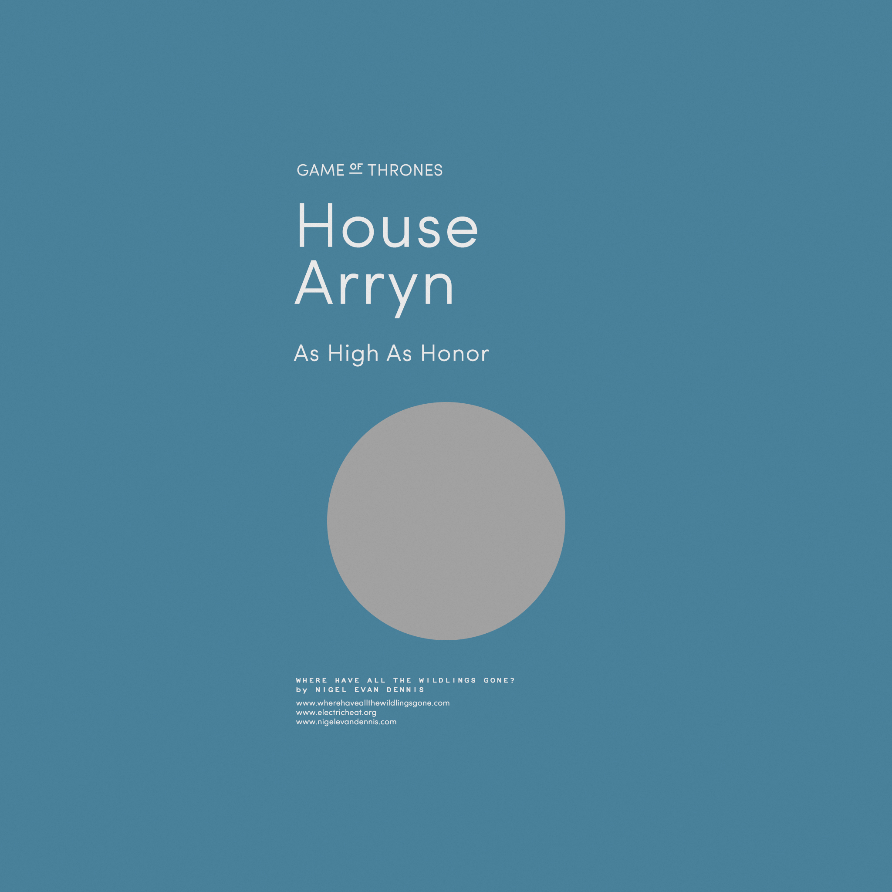

La maison Stark est la maison suzeraine du Nord et son siège se
situe à Winterfell. Leur blason est un « loup-garou » gris sur
champ blanc.
Lieu : Winterfell
Devise : « L'hiver vient »
Personalités :
Eddard Stark
Catelyn Stark
Maison Targaryen
La maison Targaryen est une antique maison de Westeros,
descendante de l'empire Valyrien qui domina le Continent Est pendant des siècles.
Lieu :Westeros
Devise : « Feu et Sang »
Personalités :
Aerys Targaryen
Daenerys Targaryen
Maison Clegane
La Maison Clegane est une maison vassale qui jurent fidélité
à la Maison Lannister. Leur emblème représente trois chiens.
Lieu : Terres de l'Ouest
Devise : « Allégence aux Lannister »
Personalités :
Sandor Clegane
Gregor Clegane
Maison Bolton
La maison Bolton est réputée pour ses pratiques horrifiantes d'écorchement,
pratique notamment illustrée sur leur blason, qui illustre un homme écorché sur fond noir.
Lieu : Winterfell
Devise : « Nos lames sont acérées »
Personalités :
Lord Roose Bolton
Ramsay Snow
Maison Baelish
La maison Baelish est une petite maison de petite noblesse des
Quatre Doigts dans le Val d'Arryn. Blason : Un semis de moqueurs gris sur champ vert
Lieu : Westeros
Devise : « le savoir est puissant »
Personalités :
Petyr Baelish
Ros
Maison Arryn

La maison Arryn domine la région du Val d'Arryn depuis la forteresse imprenable des Eyrié. Son emblème est un faucon bleu sur une lune blanche.